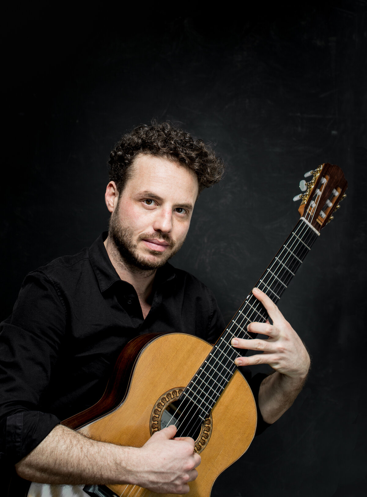

Classical Guitarist • International Performer • Music Educator
From early musical studies in Greece to international concert stages, a journey spanning classical guitar performance, teaching, and cross-cultural collaboration.

Born in Greece in 1984, my musical journey began at age seven with classical guitar studies. After graduating with excellence from the National Conservatory of Athens at eighteen, I pursued advanced studies at the prestigious Universität Mozarteum in Salzburg.
For roughly fifteen years, based in Vienna, that work took the form of an international performance career alongside teaching at music institutions across the city. It spanned traditional classical repertoire, contemporary music, and cross-genre collaborations.
I have since moved into cybersecurity, where I now work full time. This page is the record of the musical chapter rather than an active concert diary.
Universität Mozarteum Salzburg (2006-2010)
Class of Prof. Eliot Fisk / Ass. Ricardo Gallen
National Conservatory of Athens (1992-2006)
Class of Prof. Harris Pelonis
Vienna Konservatorium (2018)
Specialized Studies: Early Music (Jürgen Hübscher), Contemporary Music (Simone Fontaneli), Composition/Improvisation (Wolfgang Niessner)
Master Classes: L. Brower, A. Desiderio, M. Tamayo, P. Romero, C. Cotsiolis
Concierto de Aranjuez (J. Rodrigo), conducted by Roberto Buffo
Concierto de Aranjuez (J. Rodrigo), conducted by Bernhard Schneider
Chamber orchestra collaborations
Musikverein Wien, Gasteig München performances
Musikverein Wien
Gasteig München
Stadttheater Baden
Jazzit Salzburg
Porgy and Bess Wien
International guitar festival, Austria
France
Traditional Greek music at Jazzit Salzburg and Porgy and Bess Wien
Collaborations with SEAD Salzburg dance groups
Stadttheater Baden and various opera singers
Geographic Reach: Austria, Germany, Greece, France, Croatia, Serbia, Argentina
City of Vienna Education Institute - Full-time
Upper Austria - Full-time substitute
Freelance instructor
Penzing, Brigittenau, Favoriten, Urania - Freelance
VHS Hallbergmoos, IG InitiativGruppe - Freelance
Over fifteen years of experience across diverse educational settings, from elementary pedagogy institutions to adult education centers. Specialized in curriculum development and adapting teaching methods for various age groups and skill levels.
I still take a small number of private guitar students in Vienna, on limited availability. Email is also the right address for anything relating to the work above.
Vienna, Austria